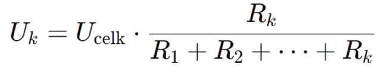
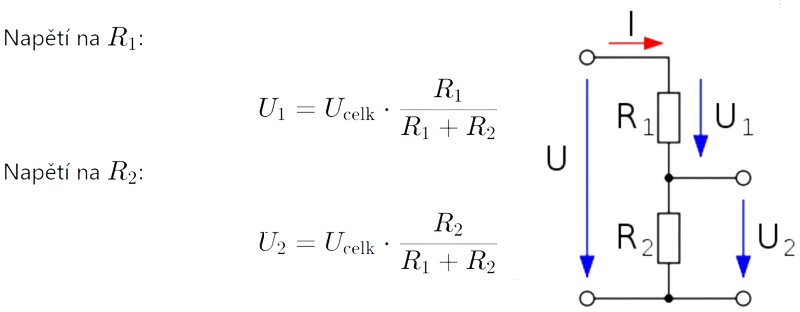

Teorie
Dělič napětí je jednoduchý elektrický obvod, který slouží k získání menšího napětí z napětí většího. Používá se velmi často v elektronice, měřicí technice i v běžných elektrických obvodech.
Základní dělič napětí je tvořen dvěma a více rezistory zapojenými do série. Vstupní napětí je přivedeno na celý dělič a výstupní napětí se odebírá z uzlu mezi rezistory. Hodnota výstupního napětí závisí na poměru odporů jednotlivých rezistorů.
Pokud máme sériově zapojené rezistory, Uk označuje napětí na k-tém rezistoru:
Představme si obvod s dvěma rezistory R1 a R2 zapojenými v sérii, kde celkové napětí je Ucelk.
V praxi je výstup děliče často připojen na další obvod (zátěž). Pokud má zátěž malý odpor, může ovlivnit správnou funkci děliče a změnit výstupní napětí. Proto je důležité, aby odpor zátěže byl výrazně větší než odpory rezistorů v děliči.